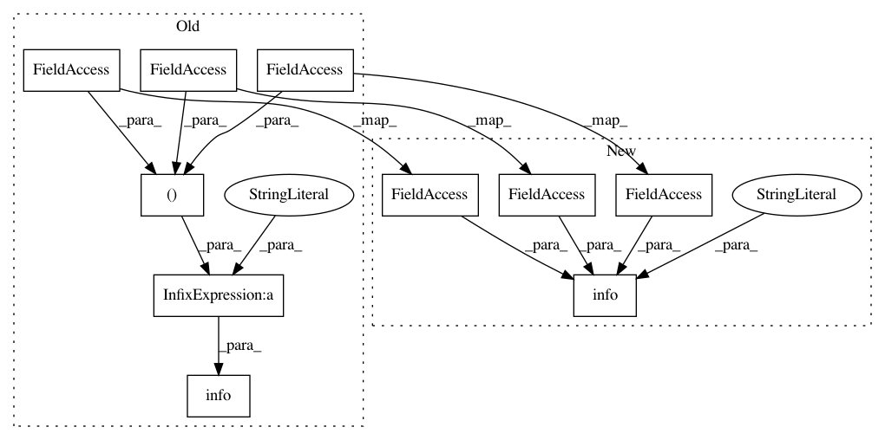

2db937dc24b89c9c19baa59ca373465f142b926e,gensim/models/word2vec.py,Word2Vec,score,#Word2Vec#Any#Any#Any#,796
Before Change
warnings.warn("C extension compilation failed, scoring will be slow. "
"Install a C compiler and reinstall gensim for fastness.")
logger.info(
"scoring sentences with %i workers on %i vocabulary and %i features, "
"using sg=%s hs=%s sample=%s and negative=%s"
% (self.workers, len(self.vocab), self.layer1_size, self.sg, self.hs, self.sample, self.negative))
if not self.vocab:
raise RuntimeError("you must first build vocabulary before scoring new data")
After Change
warnings.warn("C extension compilation failed, scoring will be slow. "
"Install a C compiler and reinstall gensim for fastness.")
logger.info(
"scoring sentences with %i workers on %i vocabulary and %i features, "
"using sg=%s hs=%s sample=%s and negative=%s",
self.workers, len(self.vocab), self.layer1_size, self.sg, self.hs, self.sample, self.negative)
if not self.vocab:
raise RuntimeError("you must first build vocabulary before scoring new data")
In pattern: SUPERPATTERN
Frequency: 5
Non-data size: 10
Instances
Project Name: RaRe-Technologies/gensim
Commit Name: 2db937dc24b89c9c19baa59ca373465f142b926e
Time: 2015-07-20
Author: radimrehurek@seznam.cz
File Name: gensim/models/word2vec.py
Class Name: Word2Vec
Method Name: score
Project Name: RaRe-Technologies/gensim
Commit Name: 3d9c5f4a234e1704e30da95aff0d8f0fef5c3740
Time: 2017-04-10
Author: me@radimrehurek.com
File Name: gensim/matutils.py
Class Name: MmReader
Method Name: __init__
Project Name: GoogleCloudPlatform/PerfKitBenchmarker
Commit Name: 687713e708b15f84b791680fa80318faf9f5b6e8
Time: 2015-01-27
Author: stfeng@google.com
File Name: perfkitbenchmarker/test_scripts/object_storage_api_tests.py
Class Name:
Method Name: Main
Project Name: dmlc/gluon-nlp
Commit Name: b079babf096e2a82bb901c7e16efe14183f7709f
Time: 2019-05-03
Author: szha@users.noreply.github.com
File Name: scripts/parsing/common/data.py
Class Name: ParserVocabulary
Method Name: log_info
Project Name: RaRe-Technologies/gensim
Commit Name: 1aca66dfb0fd2af451016bf00178e753a881b2cb
Time: 2015-07-20
Author: radimrehurek@seznam.cz
File Name: gensim/models/word2vec.py
Class Name: Word2Vec
Method Name: train